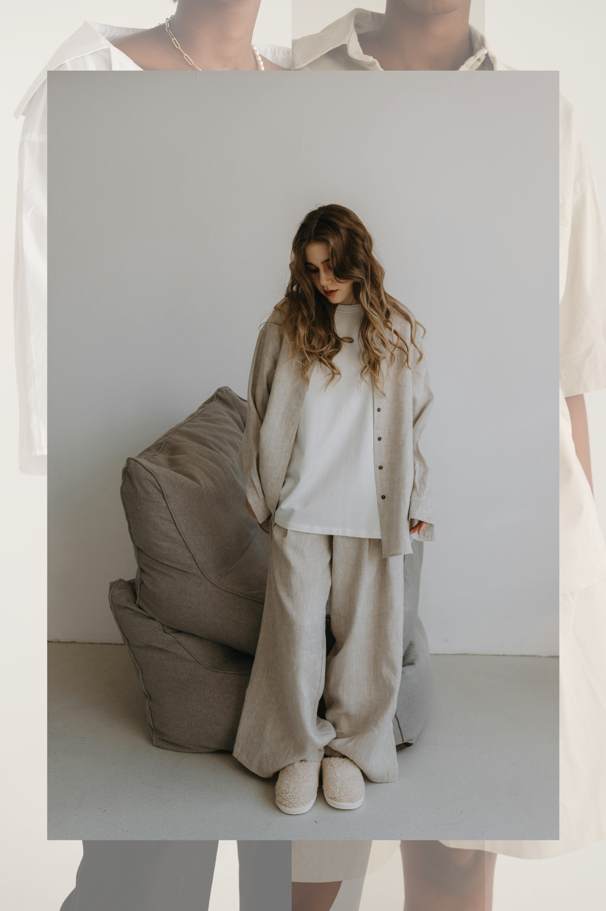

Fashion influencers have become the modern-day trendsetters, shaping everything from what we wear to how we shop. Dive into this analysis of how influencers impact consumer behavior, drive brand awareness, and boost sales through data-backed insights and trends. Explore the numbers behind influencer marketing in the fashion industry and see how brands are leveraging social media to stay ahead.
Trends are constantly evolving, but what drives them? In this deep dive, we break down the forces shaping today’s fashion landscape using analytics to uncover the patterns behind the next big thing. From runway predictions to consumer sentiment, explore how data plays a pivotal role in understanding and forecasting fashion trends.

This study integrates quantitative analytics and behavioral insights to reveal why consumers choose certain styles and how emotional and social factors drive purchasing decisions. It also demonstrates how brands can use surveys, social media sentiment, and sales data to create personalized, effective marketing strategies...
Sustainability in fashion has become a critical focus for both brands and consumers, as environmental concerns and ethical practices increasingly influence purchasing decisions. This case study would explore how sustainability trends are reshaping the fashion industry, focusing on consumer behavior, market trends, and the role of brands in adapting to the growing demand for eco-friendly and socially responsible products.m.

This case study would explore the rise of gender-neutral fashion and its implications for consumer behavior and the fashion market. By analyzing consumer demographics, purchasing patterns, and the success of gender-neutral brands, you would assess the market potential for these products. The study would also look at how established brands are adapting to this trend, whether through inclusive marketing or new collections. It would also explore how gender-neutral fashion is redefining traditional fashion categories and how this influences customer loyalty..
Price elasticity, which measures how sensitive consumers are to price changes, plays a crucial role in shaping purchasing behavior, especially during seasonal sales like Black Friday, summer clearance events, and other promotional periods. This case study focuses on understanding the dynamics of price elasticity within the fashion industry and how it influences consumer behavior during key sales periods. By analyzing sales data from various seasons, we’ll explore how price changes affect the demand for fashion products, how brands can optimize pricing strategies, and whether discounts drive impulse purchases or build long-term value for consumers..
Color choices in fashion are far from superficial. They are a strategic element in shaping consumer behavior, driving purchases, and creating lasting brand impressions. By understanding the psychological and cultural significance of color, fashion brands can tailor their collections and marketing strategies to align with consumer emotions, ultimately influencing their purchasing decisions. This case study reveals the intricate relationship between color and consumer behavior, offering valuable insights for fashion professionals and marketers looking to enhance their sales strategies..